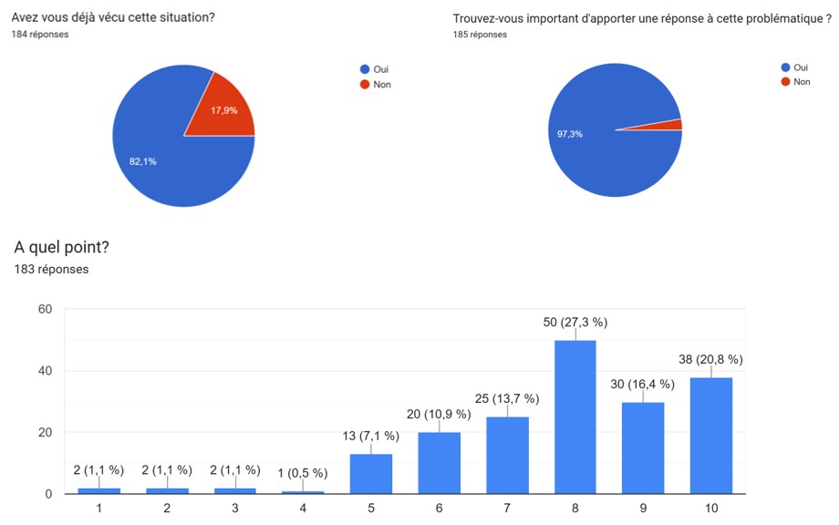
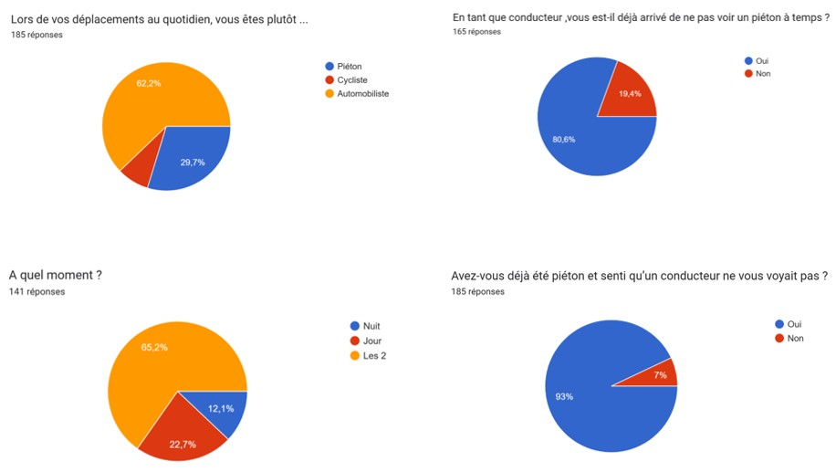
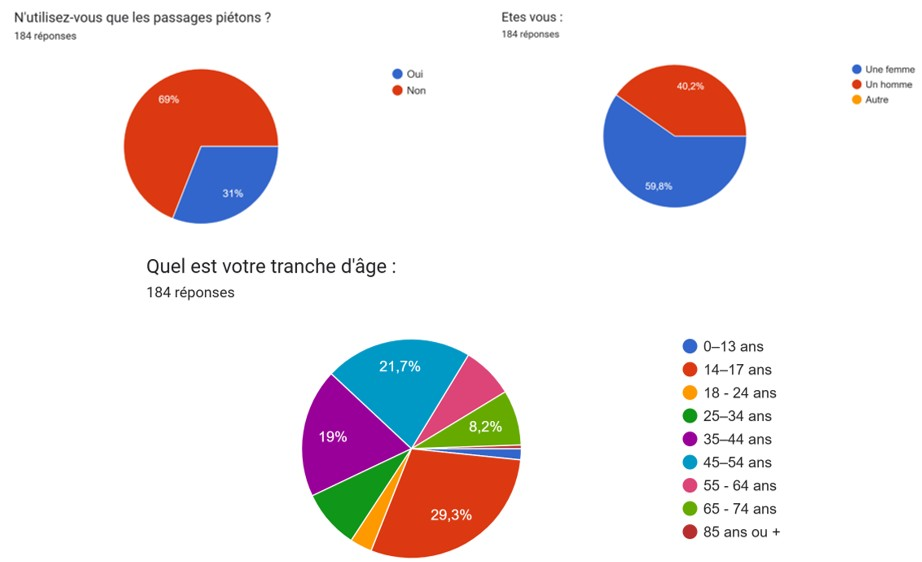

Une étude détaillée de la sécurité routière en France pour 2024 nous a permis de cibler les recherches de problématiques.
Après analyse, il apparait que les accidents sont plus importants sur le réseau routier en ville ou en campagne et que les victimes principales sont des jeunes entre 14 et 24 ans, qualifiés "d'usagers vulnérables" car ils utilisent des modes de transports non carrosés!
Cette analyse nous a montrer que nous étions, nous les jeunes lycéens et étudiants, les principales victimes des accidents de la route!
Cela nous a motivé à nous dépasser!

 |
 |
 |
 |
Brainstormings, source: USM
Après analyse des deux problématiques selon des critères de faisabilité et d'innovation, nous avons retenu la problématique suivante:
Comment avertir les conducteurs de véhicules de la survenue d’usagers vulnérables sur la route alors qu’ils ne sont pas visibles?

Source: USM
Pour vérifier que le besoin est toujours d'actualité, nous avons créé un sondage qui nous a permis de vérifier que cette situation problème est réellement ressentie dans la population.
Lien pour participer à notre sondage
Actuellement nous avons approximativement 200 personnes qui ont répondues à notre sondage.
Les résultats nous montrent que la situation problème que nous avons trouvé et ciblé est réaliste et concerne 82% des personnes sondées!



Présentation des résultats seulement pour les réponses en français. Source: USM
Nous avons déposé une enveloppe Soleau auprès de l'INPI